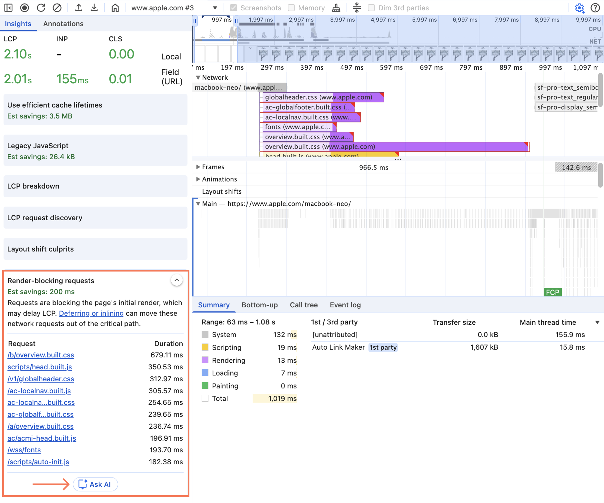
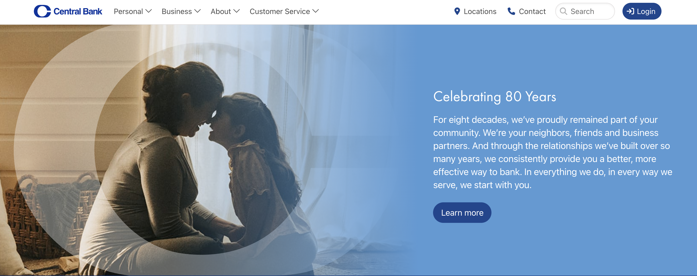
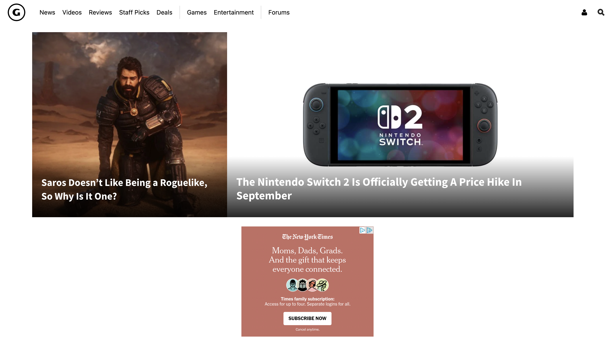
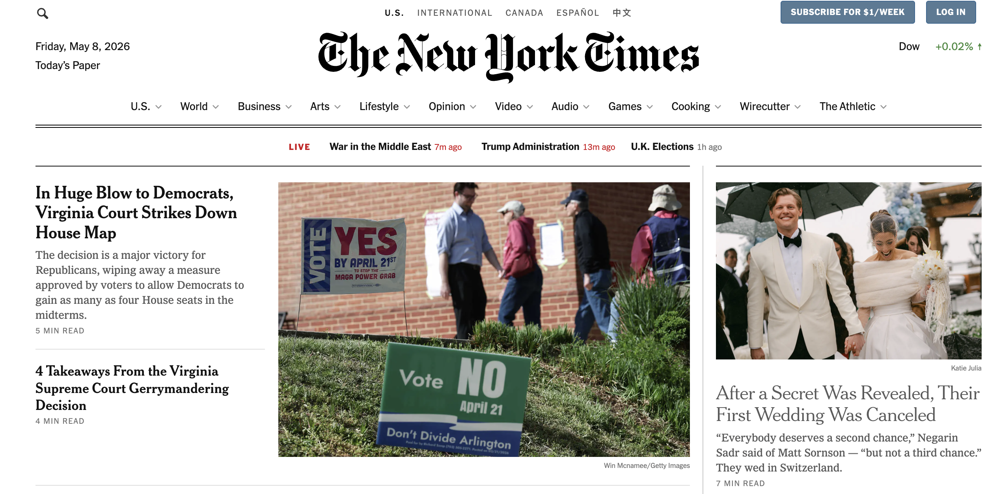
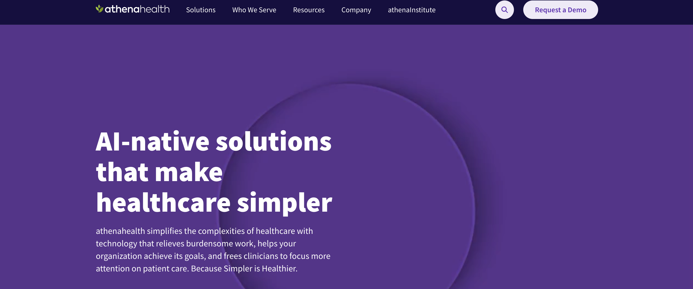

A slow page is easy to notice, but harder to diagnose. The issue could be large images, heavy JavaScript, render-blocking CSS, layout shifts, third-party tools, slow server response times, or a mix of several problems.
That is where Chrome DevTools helps.
PageSpeed Insights is useful for a quick audit, but DevTools shows what is actually happening as the page loads. You can see where the slowdown starts, what is causing it, and what to fix first.
In this guide, I'll focus on the DevTools areas most useful for diagnosing site speed issues: Lighthouse, Performance, Network, and Coverage.
How to Open Chrome DevTools
- Before we get into each tab, open the page you want to analyze in Chrome Incognito mode.
- Then right-click anywhere on the page and select Inspect.
- You can also use a keyboard shortcut: Cmd + Option + I on Mac or Ctrl + Shift + I on Windows.
- Chrome DevTools will open on the side or bottom of the browser. At the top, you'll see tabs like Elements, Console, Network, Performance, and Lighthouse.
1Lighthouse: Run a Quick Speed Audit
Google Lighthouse is a free tool built into Chrome DevTools that helps you quickly evaluate the quality and performance of a webpage.
For site speed audits, it's usually the best place to start because it gives you a baseline report, highlights the metrics that need attention, and helps you decide where to investigate next. One of the most important parts of that report is Core Web Vitals, a set of metrics developed by Google to measure user experience.
How to run a Lighthouse report
- Open the page in Chrome Incognito Mode, right-click, and click Inspect.
- Go to the Lighthouse tab. If you don't see it, click the » icon.
- For most audits: select Performance, choose Mobile, and keep Navigation mode.
- Click Analyze page load.
Key performance metrics
The key performance metrics to look for in Lighthouse are:
- Largest Contentful Paint (LCP). When the largest visible image or text block appears in the viewport. Reflects when the main content feels loaded. Core Web Vital
- Total Blocking Time (TBT). How long the browser is blocked from responding to user input. The lab equivalent of First Input Delay (FID). Core Web Vital
- Cumulative Layout Shift (CLS). How much the page moves around while it loads. A high score usually means images, ads, fonts, and injected content are shifting the layout. Core Web Vital
- First Contentful Paint (FCP). When the first text or image appears on the screen. Shows whether the page gives users an early visual response.
Lighthouse combines these metrics into an overall performance score from 0 to 100. LCP, TBT, and CLS, the three Core Web Vitals, make up 70% of the score, so they're usually the metrics worth reviewing first.
Reading the report
Use the metrics to identify which part of the page experience needs work. Then use the rest of the report to figure out why:
- Insights group related issues into clearer themes, like LCP delays or layout shift problems, so you can see the bigger pattern behind the score.
- Diagnostics show the specific details behind those issues, including the files, elements, scripts, or caching problems that may need attention.
- The “Show audits relevant to” filter lets you narrow the report by metric, including FCP, LCP, TBT, and CLS, so you can focus on the issues affecting that metric.
2Performance: Diagnose CWV Issues
The Performance tab helps you troubleshoot page speed issues and see what may be hurting Core Web Vitals.
To run a report, open Chrome DevTools, go to the Performance tab, and click Record and reload to start a lab test.
After the report loads, connect field data in the right column. This lets you compare your local test with Core Web Vitals data from real users.
Review Core Web Vitals
Click the home icon in the toolbar to see your page's Core Web Vitals. From there, you can inspect each metric more closely:
- Find the LCP element: hover over the LCP element in the Largest Contentful Paint card to see which element is counted as the LCP on the page.
- Find the CLS shift area: hover over the Worst cluster in the CLS card to highlight the area of the page where layout shifts are happening.
- Test the INP interaction: interact with the page on the left to populate the INP card. Chrome will show a local INP value so you can see whether the page responds quickly.
Further insights & Ask AI
Click the sidebar icon to see more detail about each issue. Then select Ask AI to better understand the problem and how to fix it.
You can ask AI anywhere in DevTools by clicking the three-dot icon and selecting Debug with AI.
To turn this on, go to DevTools Settings > AI innovations.

3Network: Analyze Page Requests
The Network tab shows every request a page makes as it loads, including HTML, CSS, JavaScript, images, fonts, API calls, videos, and third-party scripts.
Open the Network tab and reload the page. Start with the summary at the bottom to review total requests, transferred data, resource size, finish time, DOMContentLoaded, and load time.
Then use the request table and waterfall to see what loads, how large it is, when it starts, how long it waits, and when it finishes.
Look for:
- Slow initial HTML requests
- Large CSS, JavaScript, images, or fonts
- Important resources starting late
- Files loading one after another instead of in parallel
Find slow requests
Check the initial HTML request first
The first thing I check is the main document request. It's usually one of the first rows in the waterfall and matches the page URL.
What we're looking for is the Waiting for server response, which is essentially the page's Time to First Byte (TTFB). The server is slow if you see a long Waiting for server response segment, a large gap before other requests begin, and other resources waiting until the HTML request finishes.
If the server takes too long to return the initial HTML, the rest of the page starts late.
The Gap.com request below shows a TTFB of 1,030 ms, which is worth reviewing. As a general rule, anything above 500 ms should be investigated.
Render-blocking CSS and JavaScript
After the HTML loads, check what the browser requests next. If the start of the waterfall is filled with CSS or JavaScript, those files may be delaying the first render because the browser has to load, read, or run them before the page appears.
Use the CSS and JS filters in the Network tab to find large files, early-loading scripts, and resources that load before visible content appears.
The goal is to let the browser paint useful content as early as possible, even if the rest of the page continues loading.
What to look for:
- Large global CSS files
- Scripts blocking the page load
- Old or unused CSS
- Plugins loading globally
LCP element loading too late
If Lighthouse shows poor LCP, the Network tab can help you see whether the LCP element is being discovered too late. The LCP element is often a hero image, featured image, large heading, video poster, or major above-the-fold content block.
Check where the LCP that you discovered in the Performance tab starts in the waterfall. A bad pattern often looks like this: the HTML loads first, then CSS, JavaScript, and other page resources load, and only after that does the hero image start downloading.
- Click the LCP image's row and check the Initiator column. If it says “Parser,” the browser found it in the HTML (good). If it says “Script,” something injected it after the page started loading — that's why it's late, and where <link rel="preload"> helps most.
Find heavy resources
Large images and oversized downloads
Images are often one of the biggest contributors to page weight. Large images can slow down downloads and directly affect LCP, especially if they appear above the fold.
As a general rule, images around 300–500 KB are worth checking, 500 KB–1 MB should be investigated, and anything over 1 MB should be treated as high priority.
Spot oversized images via the Console. Paste this into the Console tab to list any image with more than 4× the pixel count it needs to render.
Paste into Console[...document.images]
.map(img => {
const rect = img.getBoundingClientRect();
return {
src: img.currentSrc || img.src,
natural: `${img.naturalWidth}x${img.naturalHeight}`,
rendered: `${Math.round(rect.width)}x${Math.round(rect.height)}`,
oversizeRatio: rect.width && rect.height
? Math.round((img.naturalWidth * img.naturalHeight) / (rect.width * rect.height))
: null
};
})
.filter(img => img.oversizeRatio && img.oversizeRatio > 4)
.sort((a, b) => b.oversizeRatio - a.oversizeRatio);Large JavaScript bundles
Large JavaScript files can slow the page down even after they finish downloading. The browser still has to parse, compile, and execute that code, work that delays rendering and makes the page feel less responsive.
Find them the same way as large images, but filter by JS instead.
Third-party scripts
Third-party scripts are a common cause of performance problems on large websites.
These are requests from outside domains, such as googletagmanager.com, assets.adobedtm.com, facebook.net, doubleclick.net, or hotjar.com.
These scripts become an issue when they affect the initial page load. Look for third-party requests that load before key resources like CSS, fonts, or the LCP image, take several hundred milliseconds to download, trigger extra requests, or come from inactive tags.
4Coverage: Find Unused Code
The Coverage tab helps identify CSS and JavaScript that loads but is never actually used. This is extremely common on modern websites.
To open it, hit Cmd + Shift + P (Mac) or Ctrl + Shift + P (Windows) inside DevTools, search for "Coverage," then reload the page. Chrome will show the total bytes loaded, unused bytes, and percentage of unused code for each file.
1. Large unused JavaScript
Large unused JavaScript means the page is loading code it does not need. This can include first-party JavaScript files, third-party libraries, interaction-only scripts loaded upfront, or desktop-specific code loading on mobile.
This often happens when one large app, vendor, or design-system bundle is used across every template, even on simple pages. If a page has 500 KB+ of unused JavaScript, treat it as a high-priority issue.
To fix it, split JavaScript by route, template, or component so each page gets only the code it needs. Remove unused dependencies, lazy-load non-critical features, and avoid sending desktop-only components to mobile when possible.
2. Large unused CSS
Unused CSS is the stylesheet version of the same problem. It usually happens when a site loads one large global stylesheet, theme file, or design-system file across every template, even when the page only uses a small portion of it.
If unused CSS is render-blocking, the browser may delay paint while it processes styles that are not actually needed. If a page has 150 KB+ of unused CSS, treat it as a high-priority issue.
To fix it, split CSS by template or component so each page only loads the styles it needs. Additionally, inline critical above-the-fold CSS, defer non-critical CSS, and remove unused or outdated styles carefully.
5Page Speed Fixes by Metric
Once Lighthouse highlights the metrics dragging the page down, the next step is figuring out how to fix them.
Below are the most common causes for each page speed issue and the fixes that tend to work.
Largest Contentful Paint (LCP)
LCP issues usually come from one of four places: the server is too slow, important CSS or JavaScript is blocking the page, the LCP resource is too large, or the main content depends too much on client-side JavaScript.
- Slow server response times (high TTFB). The server takes too long to send the page to the browser, delaying the rest of the load. Network
- Upgrade to better hosting.
- Enable full-page caching.
- Use a CDN to serve pages from locations closer to users.
- Reduce database strain.
- Remove avoidable redirects.
- Render-blocking JavaScript and CSS. Scripts or stylesheets delay the browser from showing the main content. Network Lighthouse
- Minify and compress CSS and JavaScript files.
- Split styles by page or template.
- Inline the CSS needed to style above-the-fold content.
- Defer CSS or JavaScript that is not needed right away.
- Slow resource load times. Large images, videos, fonts, or other files take too long to load. Network
- Compress large images, videos, and other files.
- Resize images to match their display size.
- Preload the LCP image or other critical resources.
- Use responsive
srcsetfor images on different screen sizes. - Use WebP, AVIF, or JPEG instead of PNGs for photos.
- Lazy-load images and videos below the fold.
- Don't lazy-load above-the-fold images.
- Use a standard
<img>for the LCP image. Avoid CSS backgrounds, sliders, or theme wrappers that delay the browser from discovering it.
Find lazy-load issues via the Console. Paste these into the Console tab to spot above-the-fold images set to lazy-load (first snippet) and below-the-fold images that aren't (second).
Above-the-fold images set to lazy-load
Below-the-fold images not lazy-loaded[...document.images] .filter(img => { const rect = img.getBoundingClientRect(); return rect.top < window.innerHeight && img.loading === 'lazy'; }) .map(img => ({ src: img.currentSrc || img.src, alt: img.alt, loading: img.loading, top: Math.round(img.getBoundingClientRect().top) }));[...document.images] .filter(img => { const rect = img.getBoundingClientRect(); return rect.top > window.innerHeight && img.loading !== 'lazy'; }) .map(img => ({ src: img.currentSrc || img.src, alt: img.alt, loading: img.loading || '[not set]', top: Math.round(img.getBoundingClientRect().top) })); - Client-side rendering. Important content depends on JavaScript before it can appear on the page. Performance Network
- Reduce critical JavaScript.
- Avoid making key content depend entirely on JS.
- Consider server-side rendering for important pages.
On the CentralBank.com homepage, several issues stand out as contributing to the high LCP:

- Below-the-fold images load before the LCP image. The browser is spending network resources on images users cannot see yet, which delays the main above-the-fold image.
- The LCP image is a CSS background image. The browser has to download and process the CSS before it can discover the image. Use a standard <img> element with fetchpriority="high".
- The mobile image is oversized. Mobile users are downloading a 1000px image for a 430px display area. Use srcset and sizes to serve smaller images on smaller screens.
- The LCP image is a JPEG. Convert the hero image to WebP or AVIF. Modern formats can reduce file size by 30–50% while keeping similar visual quality.
Cumulative Layout Shift (CLS)
CLS issues usually come from one of three places: images without dimensions, content that loads in late, or fonts swapping after text is already visible.
- Images without dimensions. Without width and height attributes, the browser can't allocate space until the image downloads, shifting nearby elements. Performance Console
- Add width and height attributes on images and videos.
- Dynamically injected content. Embedded content (e.g., social posts or widgets) can load at unpredictable heights, causing layout shifts. Performance Elements
- Reserve space before it loads, such as setting a minimum height for the container.
- Fonts loading after text appears. Fonts can swap in after text is already visible, which may cause the layout to shift. Performance Network
- Preload important font files.
On GameSpot.com, several issues stand out as contributing to a poor CLS score:

- Top ad space is not reserved. When ads load above the page content, they push div#site-wrapper down and cause the page to jump. Reserve the expected ad height before the ad loads.
- Carousel and card images are missing dimensions. Many images don't include width and height in the HTML, so the browser can't reliably hold space for them before they load. Add image dimensions or use CSS aspect-ratio.
- The header and ad containers expand after load. Elements above the main content change height after the page starts loading, which pushes #site-wrapper downward. Set a min-height for those areas so the layout stays stable.
Total Blocking Time (TBT)
TBT issues almost always come from one place: JavaScript keeping the main thread too busy to respond to user input.
- Heavy JavaScript. JavaScript is keeping the main thread busy and the browser can't respond to user input quickly. Performance Network Coverage
- Split large JavaScript tasks into smaller chunks.
- Split JavaScript by route or template.
- Prioritize JS needed for key interactions so users can interact without delay.
- Use a web worker to run tasks outside the main browser thread.
- Reduce JavaScript execution time.
- Reduce hydration cost on mostly static pages.
On NYTimes.com, large JavaScript is contributing to the high TBT:

- Large JavaScript bundles are taking too long to execute. The page spends significant main-thread time evaluating large scripts, including main-7898505577c9d051fa86.js and a large vendor bundle. Break large bundles into smaller chunks and use dynamic imports so the browser only loads the JavaScript needed for the initial view.
First Contentful Paint (FCP)
FCP issues usually come from CSS getting in the way: either external stylesheets blocking the page from rendering, or heavy and unused styles slowing down what the browser has to compute.
- Render-blocking external stylesheets. External CSS can delay the first visible content because the browser has to download and process the stylesheet before showing the page. Network Lighthouse
- Inline styles for above-the-fold content.
- Heavy or unused style calculations. Complex or unused CSS gives the browser more work to do before it can show content. Coverage Performance
- Simplify CSS.
- Reduce complex selectors.
- Remove styles the page does not use.
- Many of the same causes that hurt LCP — slow server response and render-blocking JavaScript — also affect FCP.
On Athenahealth.com, several issues stand out as contributing to the poor FCP:

- Too many CSS files are blocking the first paint. The page loads 14 separate stylesheets early, including component-specific files like CardCarousel.css, PageTitleModule.css, and AthenaOneInAction.css. The browser has to download and parse these files before it can show content.
- Non-critical CSS is loading too soon. Styles for lower-page components, such as carousels and footer sections, appear to load before the first paint. Defer CSS that is not needed for above-the-fold content.
- Font files are adding more delay. Google Fonts stylesheets for Source Sans Pro and PT Serif add extra requests before text can render cleanly. Use font-display: swap or font-display: optional so text can appear while custom fonts load.